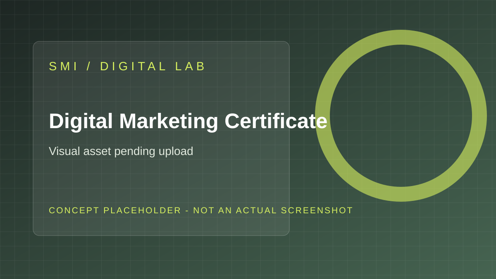

ABOUT / PERSONAL PROFILE
Tentang manusia
di balik sistem.
Seorang digital marketer e-commerce yang mengeksplorasi cara memadukan kebutuhan bisnis, data, kreativitas, dan teknologi AI.

01 / MY STORY
Halo, saya
Sultan Muhammad Iqbal.
Saya bekerja di ranah digital marketing dan e-commerce, sekaligus membangun proyek AI serta aplikasi yang membantu menerjemahkan ide menjadi sistem yang dapat dicoba.
CV 2026 saya mencatat pengalaman sejak 2018 di bidang digital marketing. Perjalanan peran yang terdokumentasi meliputi marketplace operations, sales & marketing leadership, digital advertising, SEO, analytics dan tracking. Belakangan, saya juga mengembangkan workflow AI, dashboard, dan proyek web berbasis eksperimen.
Saya tertarik pada teknologi bukan hanya karena model atau tools barunya, tetapi karena kemampuannya memperjelas proses, mempercepat pekerjaan berulang, dan membuka kemungkinan produk baru.
Digital Marketing
Google Ads, Meta Ads, SEO, marketplace, Google Merchant Center, conversion tracking.
Data & Analytics
GA4, GTM, Search Console, Looker Studio, evaluasi performa dan pelaporan.
AI & Automation
ChatGPT, Gemini, Claude, MCP, Apps Script, prompt workflows, dan human review.
Digital Product
Website systems, dashboard prototypes, reusable templates, dan agent orchestration.
02 / LEARNING
Belajar, bereksperimen,
dan membangun.
Riwayat pendidikan dan pelatihan berdasarkan CV 2026.
MAN Surabaya
Pendidikan formal
Jurusan Agama, sebagaimana tertera di CV.
Google Gapura Digital
Pelatihan dasar pemasaran online
Dedy Liem E-commerce Class
Technical learning marketplace
MySkill Digital Marketing
Digital marketing class
CV mencatat pembelajaran 12 mata pelajaran terkait digital marketing.

MySkill Certificate of Skill Mastery
Cuplikan sertifikat dari halaman 11 CV. Penerbitan dan nomor kredensial belum diverifikasi secara independen.
03 / CV & CONNECT
Rekam kerja yang
terus diperbarui.
Versi CV lengkap yang diunggah berisi informasi pribadi. Karena itu, file mentah tidak tersedia untuk diunduh dari website ini. Kita bisa membuat CV publik terpisah setelah seluruh isinya disetujui.